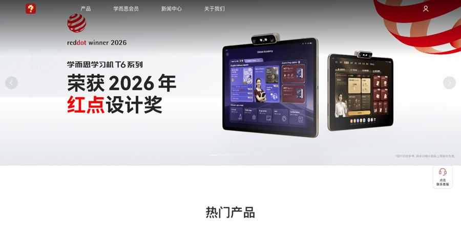
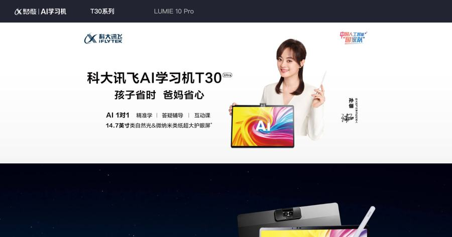
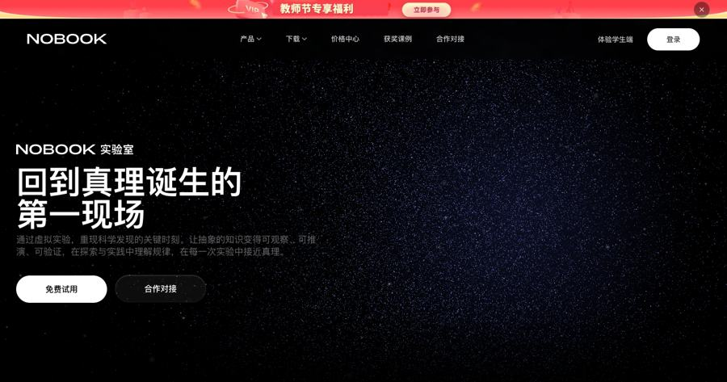
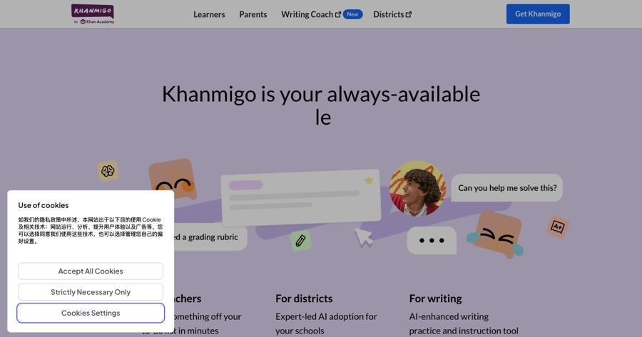

每道大题背后都藏着一个模型。格物把它翻译成行李传送带、强磁掉进铜管、冰箱为什么会保鲜—— 先让你用常识猜，再拖着参数看，最后才落到公式。再把一个领域的知识点一次收齐，一格都不落。
当前进度：高中物理·力学域内测准备中（产品原型，非已发布商品）。工作名「格物」，待定。
学生要「听得懂」，家长要「看得见的证据」，老师要「省时的演示」。三件事错位，所以一份内容必须一鱼三吃。
最深的痛点不是不会算，是物理情景脑补不出来——"传送带上的板块到底怎么动？磁场里粒子的轨迹长什么样？"讲题视频讲完这一道，下一道换个场景还是不会。
焦虑 × 证据 = 预算；有焦虑没证据 = 流失。万元学习机卖点趋同，家长越来越难判断"钱花得值不值"。心理价位：学习机 2,000–4,000 元，年课 0.8–4 万。估
备课省时、课堂演示有效果、学情可见、合规无风险。老师不是付款主体，但是最好的获客钩子——场景交互页天生就是课堂投影课件。
所以产品的形态是一份内容、三种交付：同一个场景页，是学生「看得懂的思路」、是家长「可展示的进步证据」、是老师「现成的演示课件」。
传统教学从公式出发，学生背下了却不懂。格物从现象出发：先问一个学生答得上的生活问题，再让他拖着参数自己发现规律，最后公式只是把已经看懂的事记成账。
板块模型 = 行李箱过扶梯；电磁感应 = 强磁掉进铜管会变慢。场景不是包装，是认知的落脚点——先让他有话说。
不是看预制动画，是拖一下、画面立刻变。把 α 拖到接近共线，绳子拉力瞬间发散的震撼，比背一句"sin 在分母"管用得多。
规律已经被看见了，公式负责把它写成可迁移的语言。这时学生看到的不再是符号，是刚刚玩过的那个现象。
| 高频模型 | 生活原型 | 先问学生的常识题 | 落点公式 |
|---|---|---|---|
| 板块模型 | 行李箱放上行李传送带 | 行李会被带子送走，还是原地不动？ | s = v²/2μg |
| 传送带模型 | 机场安检机 / 快递分拣线 | 快递会不会在皮带上打滑？ | a = μg |
| 电磁感应 | 强磁掉进铜管、磁悬浮刹车 | 为什么强磁在铜管里下落会变慢？ | Δv = B²L²Δx/mR |
| 平抛运动 | 行驶中往上抛球、灌篮 | 边开车边往上抛，球会落在哪？ | h = ½gt², x = v₀t |
| 化学反应速率 | 食物冷藏 vs 常温变质 | 冰箱为什么能保鲜？ | v = k·c^n |
| 函数与导数 | 打车计价表、车速表瞬间读数 | "瞬时速度"到底是什么意思？ | v = s′(t) |
科学底座 · 情境锚定律：锚式教学（Bransford / CTGV 的 Jasper 系列）把学习锚定在真实问题情境中产生生成性学习；CRA 序列（具体 → 表象 → 抽象）给出理解构建的次序；双编码理论（Paivio / Mayer）说明语言与图像双通道并行呈现优于单通道。 诚实注记：CRA 的实证集中在小学与补差人群，高中段证据较弱——这正是第 7 周的对照对拍要补的
以「域」为单位：全部知识点一次收齐 → 机器覆盖门（漏一条自动回炉）→ 诊断漏点 → 场景课逐点亮 → 模型之间串联。先见森林，再见树木。
按学习连贯性而不是教材册次，把 65 章收成 12 个域，域内挂 258 个正文节。
覆盖门脚本跑真题逐题标注，漏条目即退出码非 0，自动回炉。
每个知识点 2 道诊断小测，过了才点亮，没过就补。
模型之间标 prerequisite，散点挂成结构。
不是所有章节都该做场景。复数、圆锥曲线主体、导数主体、水溶液平衡、结构域——这些是符号推演层（T4）或反场景区（S0/S1），硬套生活场景反而增加认知负荷。它们的正确做法是集中域训练系统（题组 × 反思路径 × 覆盖门），场景最多当 30 秒导入。
科学底座 · 全域图式律：先行组织者（Ausubel）先给全域总图再进知识点；掌握学习（Bloom 2σ，取"达标才进阶"的机制、不取数值，Slavin 等人的高估批评已注）；认知负荷理论（Sweller）用图式组块降负荷。 边界注记：交错练习优于集中刷题（Rohrer 2020 RCT）——本产品的「集中」指知识覆盖与图式结构，练习排程仍走间隔 + 交错。图式集中，练习交错。
「一个领域一次收齐」不能靠嘴说。人教 2019 全 16 册逐节拆成可核条目，每条都标出它在高考卷上的接口——这才是「一格都不落」的可验证含义。
第一道门比对大纲（65 章 + 254 条节级条目），第二道门比对教材内容层（册数 + 真实正文节数 + 来源，四重校验）。任一条缺失即退出码非 0，自动回炉。
定义对象 → 公式结论 → 方法技能 → 实验要点 → 教材栏目线索 → 高考接口。各科按学科习惯命名其中几栏，但骨架位置一致，机器才数得清。
每节末栏写清它对应大纲哪一章、哪一考点、什么权重。想查某个考点「教材里在哪讲、讲到多深」，顺接口就能翻回去——这是给内容生产线用的地图。
| 科目 | 册数 | 正文节 | 逐节栏位（按学科命名） | 门状态 |
|---|---|---|---|---|
| 数学 | 5 册 | 73 节 | 定义与对象 / 公式与结论 / 方法与技能 / 教材栏目线索 / 高考接口 | PASS |
| 物理 | 6 册 | 125 节 | 定义与对象 / 公式与规律 / 模型与方法 / 实验要点 / 教材栏目线索 / 高考接口 | PASS |
| 化学 | 5 册 | 60 节 | 核心概念 / 关键方程式 / 性质与转化 / 实验要点 / 教材栏目线索 / 高考接口 | PASS |
口径与边界：内容层是教材要点整理（教材目录 + 节级知识要点），不是教材原文复制。粒度到「每节的定义 / 公式 / 方法」，尚未到「逐公式证明 / 逐例题」。16 册另收录章末「整理与提升」19 条、化学「实验活动」18 条、册末专题 3 条，合计 300 条可检索条目，每册都带可核来源链接。 诚实注记：六栏里「实验要点」在数学无此项、物理覆盖 81/125 节——按该节是否含实验而定，不硬凑
下面 4 张是竞品官网的实拍（沙屏抓取）。他们各自解决了什么、哪里没做透，一目了然。




| 竞品 | 解题可视化 | 生活场景化 | 知识点集中覆盖 | 我们的缝 |
|---|---|---|---|---|
| 学而思 / 讯飞 | ●●○ 预制 3D / 板书讲题 | ●○○ | ●●○ 体系课 + 题库 | 能看不能玩 → 做成能玩的 |
| 作业帮 / 小猿 | ●●○ 搜题步骤 | ●○○ | ●○○ 题海碎片 | 越用越碎 → 集中化收口 |
| Khanmigo | ●●● 生成式交互图 | ●●○ 数学图形可拖 | ●●○ Khan 体系 | 无中国考纲 → 我们做本土场景 |
| NOBOOK / Labster | ●●○ 仿真引擎 | ●●● 但仅实验场景 | ●○○ | 仿实验 → 仿的是解题思路 |
| 松鼠 AI（LAM） | ●○○ | ●○○ | ●●● 智适应知识图谱 | 最接近集中化，但无场景无可视化 |
| 格物（我们） | ●●● 可拖即响应 | ●●● 解题场景 | ●●● 全域 + 覆盖门 | 两轴交叉的空白带 |
产品能不能成立，第一件要证的事不是"学生喜欢"，是"讲过的模型换个场景还会不会做"。所以第 7 周必须做对照组对拍。
力学域知识图收口 + 覆盖门跑通；高频模型定版（取前 6 个）。
传送带（机场安检）、电磁感应（强磁掉铜管），复用已验证工程骨架。
力学域「一域一页」总图，节点挂场景入口；家长学情报告 + 教师投影模式。
招 n≥10 学生，随机分两组，同内容同题：场景交互组 vs 讲题视频组。
"双减"红线直接管到学科类。纯线上学科 App 是被整改过的形态——这解释了为什么这条赛道最终长成了硬件的样子。
卖内容、硬件只是壳。讯飞 / 学而思已经走通的合规通道，可复用既有硬件线。
政策雷区。搜题类 App 曾被整改，不作为主形态。
课后服务政策鼓励，账期慢。场景页天然是教师课件，进校是顺势渠道。
海外华人 / 国际课程，无政策雷、汇率好；但场景有文化语境，需换语境重做。
推荐路径：内容生产先行——场景页与知识图不依赖形态，先把内容做成资产；形态走 A 为主、C 为辅，D 作 P2 观察项。